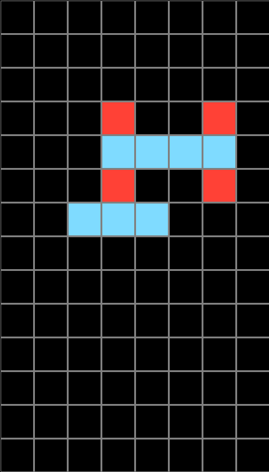
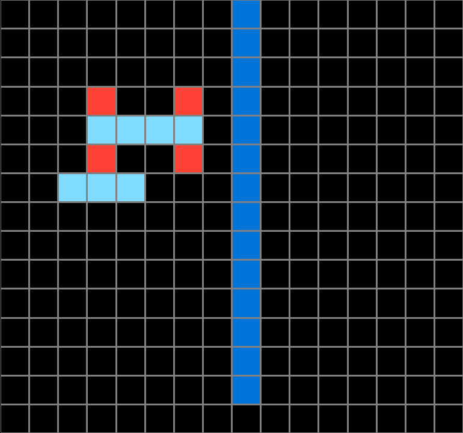
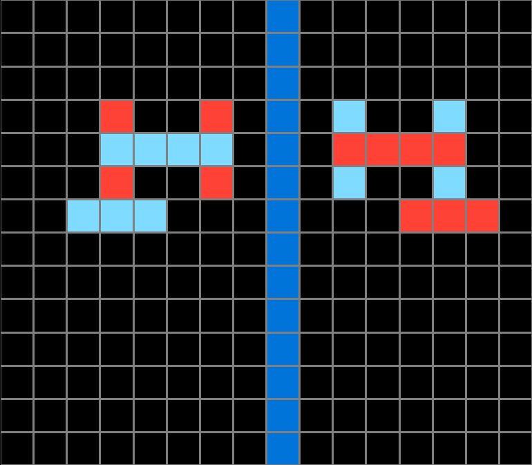
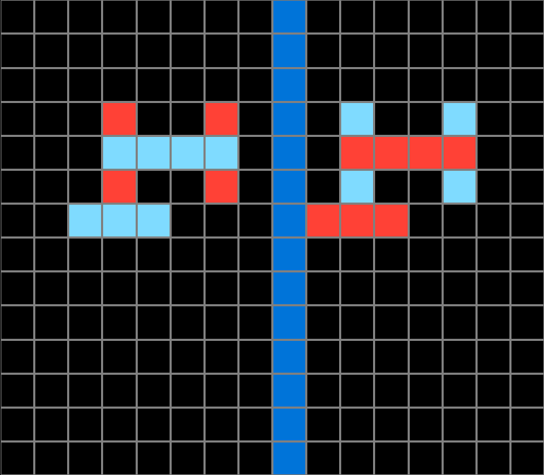
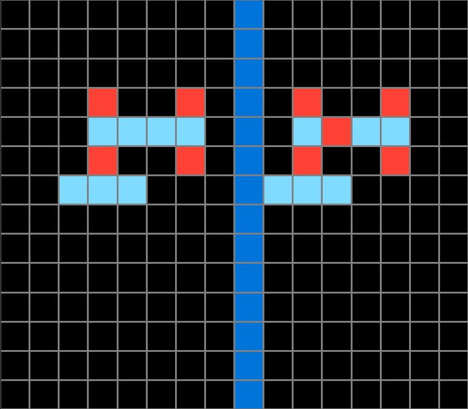
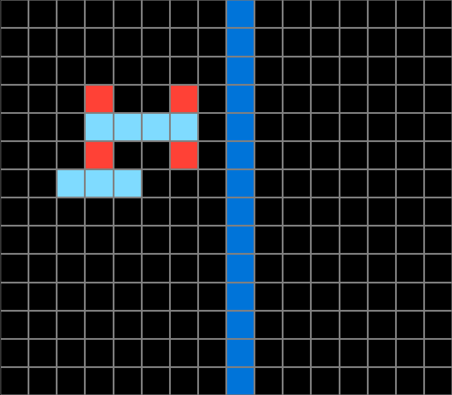
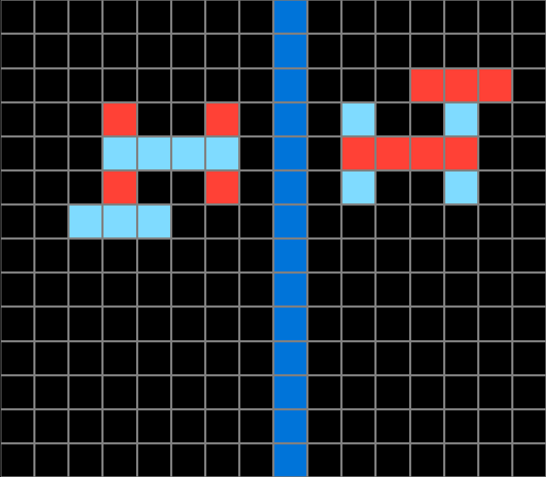
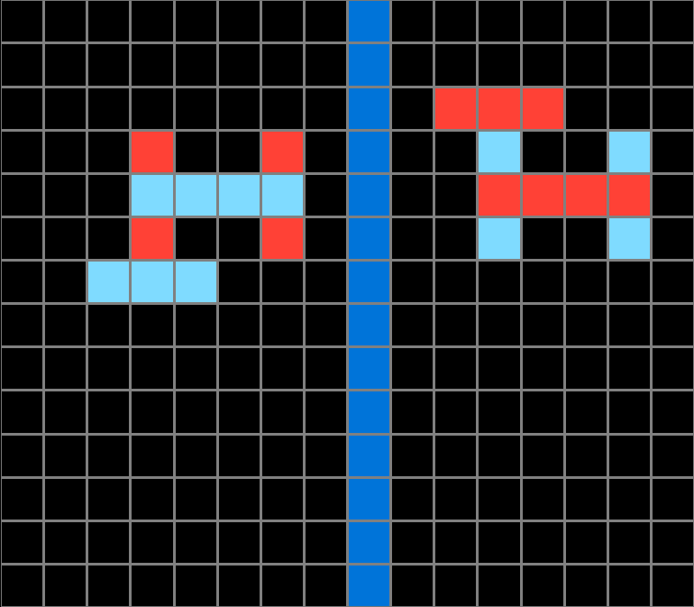
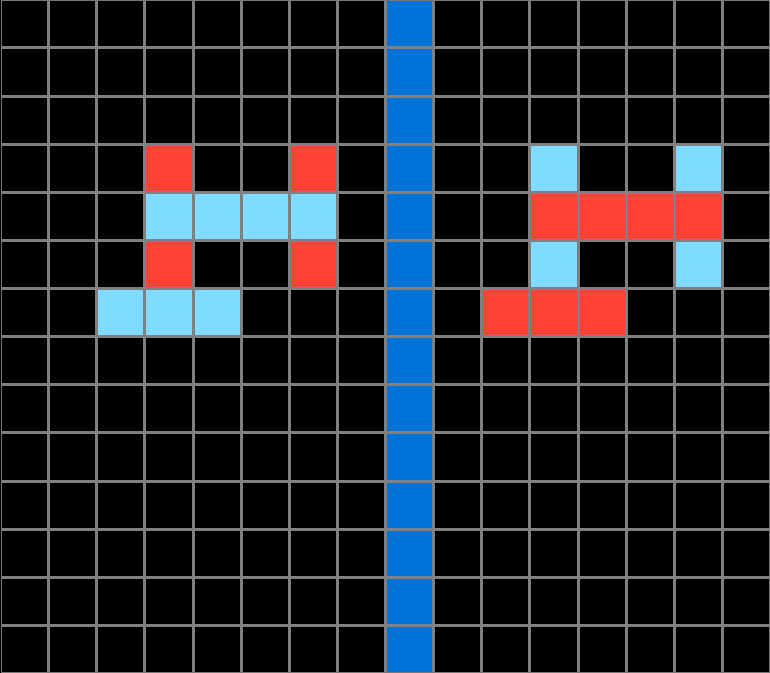
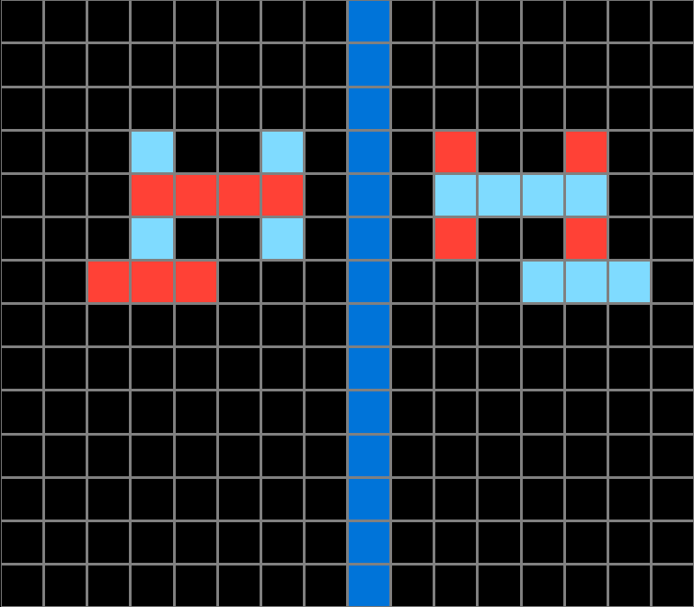

Participant 1
Initial description: Reverse the colors in the pattern. Then on the other side of the line create an inverted pattern with the colors identical to the original one.
Final description: Reverse the colors in the pattern. Then on the other side of the line create an inverted pattern with the colors identical to the original one.

Participant 2
Initial description: mirror the input on the opposite side of the blue line Then add a duplicate of the input on the left side of the blue line and reverse it's the colors of the original input
Final description: mirror the input on the opposite side of the blue line Then add a duplicate of the input on the left side of the blue line and reverse it's the colors of the original input

Participant 3
Initial description: copy the symmetry of the shape and switch the colors
Final description: copy the symmetry of the shape and switch the colors

Participant 4
Initial description: an h with a row at the bottom
Final description: i put it on the wrong side



Participant 5
Initial description: Create a mirror image with long blue line as mid point, reflecting on other side, and swap colors on image reflected.
Final description: Create a mirror image, by first swapping the image side, across blue line, then reversing the color in the mirror image.


Participant 6
Initial description: mirror and change the colors
Final description: i didnt understand after adding the input and modifying the boxes



Participant 7
Initial description: Create a mirror pattern one box from the blue line and switching the color of the original to the opposite.
Final description: Create a pattern that mirrors the original pattern across the blue line, but the colors are opposite on each side.


Participant 8
Initial description: Create a mirror image of the original shape, but flip the colors.
Final description: There is definitely a flipping color mechanic here, but maybe there is also a spacing issue that needs to be addressed. I tried flipping it in a mirrored mode.



Participant 9
Initial description: Reflect the shape across the dark blue line. Do not just copy-paste the shape, it needs to be flipped around like it is reflected in a mirror. Do not rotate it. Use the same colors as the original shape but swap the location of the colors with each other. So if the shape was blue and yellow, all the blue spots should be yellow in your reflection and all the yellow spots should be blue in your reflection.
Final description: Reflect the shape over the dark blue line using the exact same color scheme. Make sure that it is reflected as if you are looking at it in a mirror. Do not rotate it. Do not just slide it over. It must be reflected. You should now have 2 versions of the shape on the grid that are perfect reflections of each other with the exact same colors. Now recolor the "original" shape. If the input originally started with a shape on the left then you will recolor the left shape. You will recolor it by swapping the colors. For example, if it was originally blue with one yellow dot, it will now be yellow with one blue dot.


Participant 10
Initial description: Mirror the test input colors on the same side with the colors reversed while adding the same test input colors on the opposite side.
Final description: Mirror the test input colors on the same side with the colors reversed while adding the same test input colors on the opposite side.

Participant 11
Initial description: Create an image using the reverse colors of the input with one space between the blue barrier.
Final description: Recreate the grid using the correct number of boxes. Make sure to insert the blue line vertically down the 9th box. Create the inverse of the test input on the opposite side of the blue line with a space (black box) between. If the test is on the left side, put the inverse image of the lest on the right side. Create the same image using opposite colors on the other side. Imagine folding the image in half along the blue line and the boxes should be aligned.



Participant 12
Initial description: Mirror image revered like 2
Final description: Mirror image revered like 2

Participant 13
Initial description: Create a mirror image of the shape to the left of the blue line in the opposite colors
Final description: Create a mirror image of the shape to the left of the blue line in the opposite colors

Participant 14
Initial description: The original pattern is reflected across the blue line and the original pattern has the colors inverted.
Final description: The original pattern is reflected across the blue line and the original pattern has the colors inverted.